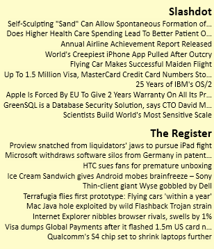

A neat little RSS reader that sits on your Windows desktop
Feedling is a little Windows-based RSS reader that I wrote. Why would I write an RSS reader? Because all the others were awful. This is purely subjective, I'm sure they're all actually brilliant, but for what I needed, they didn't come close to doing the job.
So I wrote my own. It's minimal, gets out of your way, and provides an easy way of glancing over the top headlines of all your RSS feeds.
Here's a handy button that will let you download the latest installer.
Essentially, Feedling sits on your desktop, behind all your other windows displaying the latest headlines from the RSS feeds you configure. Glancing over the latest news is no more than a keyboard shortcut away. Clicking on headlines takes you to the relevent URL in your default browser.
In the future, it'll be able to do the following things:
In the meantime, be content with my stumblings around in WPF-land of UI design, lack of integration with anything and general non-existence of cars that fly.
Here's a screenshot showing how I configure it on my desktop. It's not very exciting. It's just a bunch of links:
